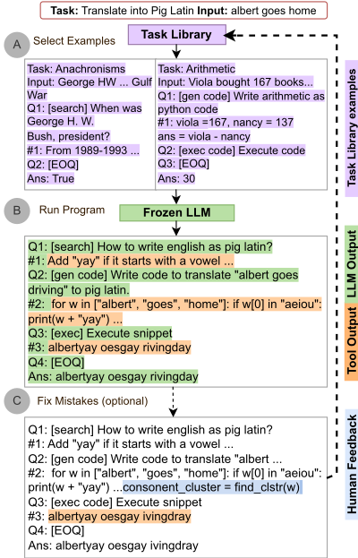
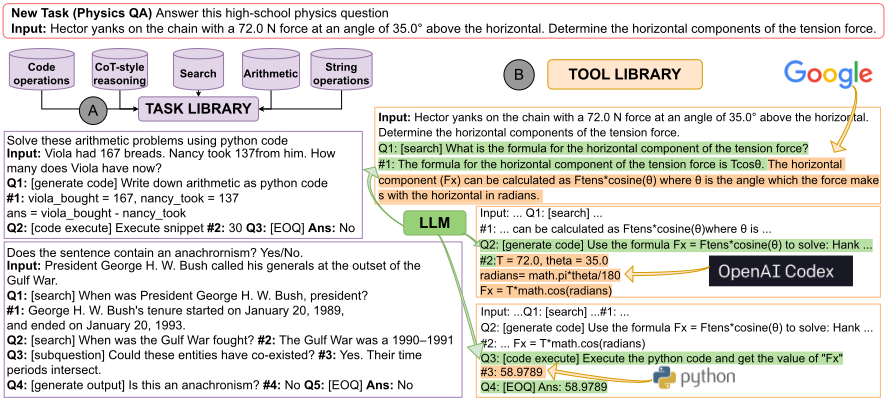
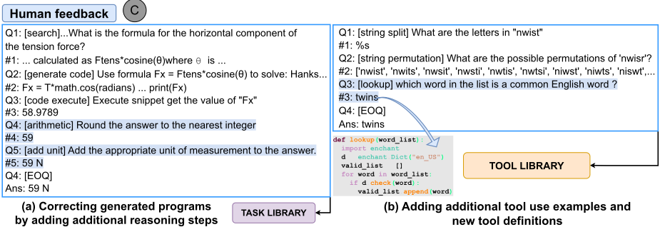
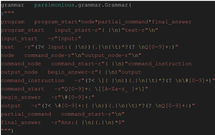

ART：面向大语言模型的自动多步推理与工具使用
LLM 用 CoT 做多步推理、用外部工具补足计算能力时，已有方法需要手工编写任务特定示范并脚本化地交错模型生成与工具调用，难以迁移到新任务和新工具。ART 框架用冻结 LLM 自动生成多步推理'程序'：从按技能聚类的任务库中检索相关任务的分解示范，用统一的 PEG 程序语法组织提示；生成时解析程序，遇到工具调用即暂停，执行 search、Codex 代码生成、Python 执行等工具并把输出回填后继续生成。在 BigBench 与 MMLU 未见任务上，ART 比 few-shot 平均高 10.8 个百分点、比 AutoCoT 平均高 22 个百分点以上，工具调用平均贡献 12.3 个百分点，并在 5/6 任务上大幅超过微调过的 Toolformer；每任务仅人工编辑 5 个程序后，在 12 个任务上超过 GPT3 最佳已知结果 20 个百分点以上。对团队而言，它是'示范资产库 + 结构化程序提示 + 生成中工具调用 harness + 人工调试闭环'的代表性设计范式。
已有 CoT 提示与工具使用方法需要手工制作任务特定示范、精心脚本化地交错模型生成与工具调用，难以扩展到新任务和新工具（往往需要微调或针对特定任务/工具的 prompt 工程）；同时 LLM 在多步推理、数学计算、获取最新信息等方面存在能力局限。论文希望仅用冻结 LLM 就能自动生成多步推理分解、自动选择并调用工具，且无需针对新任务重新训练或重写提示。
ART 是 gradient-free 框架，核心组件：(1) 任务库：从 BigBench 选出 15 个种子任务，按 5 类技能聚类，人工为每任务少量实例编写分解程序作为示范；(2) 程序语法：基于 parsing expression grammar（PEG）定义查询语言，扩展 decomposed prompting 格式，程序由 input 节点、(Q, #) 子步骤对、[EOQ] 与 Ans 节点构成，可表示工具调用符号；(3) 工具库：SerpAPI 搜索、Codex 代码生成、Python 虚拟环境代码执行，以及后续通过反馈加入的 KB lookup、Prolog 引擎；(4) 生成时解析：LLM 自写程序，遇到工具调用符号即暂停生成，调用工具并将输出整合回程序后恢复生成；(5) 任务检索：可用约 50 个 held-out 样本按任务簇选优，或用 LLM 相似度配对打分选 top-N 任务；(6) 可选人类反馈：用户编辑错误程序（修正/增删子步骤）或向工具库添加新工具，无需重训模型。
在 32/34 个 BigBench 测试任务和全部 MMLU 任务上匹配或超过自动生成的 CoT（AutoCoT），平均领先超过 22 个百分点
相比不允许使用工具，工具调用使测试任务性能平均提升超过 12.3 个百分点
在未见过的 BigBench 与 MMLU 任务上，比直接 few-shot prompting 平均提升 10.8 个百分点
在需要算术与算法推理的未见任务上，比 few-shot 提升 12.5 个百分点，比此前使用分解/工具监督的 GPT3 最佳已知结果提升 6.1 个百分点
任务库任务上比 few-shot 平均 +14.9 个百分点；不开工具时比 AutoCoT 平均 +8 个百分点，开工具后 +17.7 个百分点；工具在约 95% 测试实例中被调用，带来 +7.91 个百分点，算术类任务平均 +21.85
BigBench 测试任务上比 few-shot +6.9、比 AutoCoT +24.6 个百分点，算术任务 +19.0；工具在 89% 实例中被调用
MMLU 上 5/6 任务优于所有 baseline，平均比 few-shot +8.5 个百分点
在 5/6 个 Toolformer 评测任务上大幅超过微调过的 Toolformer，而 vanilla GPT-3 在所有任务上远差于 ART
每任务仅人工编辑 5 个错误程序后，12 个测试任务上超过 GPT3 最佳已知结果平均 20 个百分点以上；编辑量占 ART 程序 token 的 15.7%（CoT baseline 为 35%）
self-consistency（生成 15 个输出取多数）持续提升性能，但以额外计算为代价
与需要自监督微调的 Toolformer、需要任务特定手工示范的 CoT/Decomposed Prompting/Self-Ask 等不同，ART 完全无需训练：用统一程序语法（PEG 查询语言）使分解示范可跨任务复用，通过任务库检索组合动态多任务提示实现 zero-shot 迁移；在生成过程中自动解析并暂停/恢复以调用工具，而非预先脚本化交错；并内置'编辑程序 + 扩展工具库'的人类反馈机制，可在不重训的情况下修复错误、接入新工具或更换底层 LLM。
相关度级别：high
命中能力域：3.2 提示工程 | 3.3 Agent 架构与工具使用 | 3.5 评测与可靠使用
理由：论文直接命中团队两个核心能力域：3.2 方面，它用结构化程序格式与任务库示范实现 CoT/推理提示的资产化管理、复用与跨任务泛化，并系统对比了 few-shot、AutoCoT 与结构化程序的提示效果；3.3 方面，其'生成-暂停-工具调用-回填-恢复'的执行循环、可扩展工具库（search、代码生成、代码执行）与单 Agent 执行可靠性分析（如代码生成错误引发级联错误）正是 Agent harness 与工具调用的代表性早期设计。人类通过编辑程序与新增工具来调试改进的闭环，以及 self-consistency 的成本-精度权衡，也与 3.5 的人机协作工作流相关。对不训练模型、专注'用好模型'的团队，这篇是工具调用 Agent 与提示资产管理的经典参考。
建议动作：深入精读并做内部分享
arXiv:2303.09014v1 [cs.CL] 2023年3月16日
ART：面向大语言模型的自动多步推理与工具调用
Bhargavi Paranjape 1 Scott Lundberg 2 Sameer Singh 3 Hannaneh Hajishirzi 1,4 Luke Zettlemoyer 1,5 Marco Tulio Ribeiro 2
1 华盛顿大学，2 微软研究院，3 加州大学欧文分校，4 艾伦人工智能研究所，5 Meta AI
大语言模型（LLMs）能够通过生成中间的思维链（CoT）推理步骤，在少样本和零样本设置下执行复杂推理。此外，每个推理步骤都可以借助外部工具来支持超出 LLM 核心能力的计算（例如搜索/运行代码）。以往关于 CoT 提示和工具调用的工作通常需要手工构建任务特定的示例，并精心编写脚本以将模型生成与工具调用交错进行。我们提出了自动推理与工具调用（ART），这是一个利用冻结的 LLM 自动生成作为程序的中间推理步骤的框架。给定一个待解决的新任务，ART 会从任务库中选取多步推理和工具调用的示例。在测试时，每当调用外部工具，ART 都会无缝暂停生成，并在恢复生成之前整合其输出。在 BigBench 和 MMLU 基准测试（benchmark）的未见任务上，ART 相比少样本提示和自动 CoT 取得了显著提升，并在其中大多数任务上达到了与手工构建的 CoT 提示相当的性能。ART 还具有可扩展性，使人类能够通过纠正任务特定程序中的错误或引入新工具来轻松提升性能；我们通过在极少人工干预的情况下大幅提升若干选定任务的性能验证了这一点。
上下文学习（in-context learning）使大语言模型（LLMs）只需使用自然语言指令和少量示例作为 LLM 的提示（prompt），即可快速适应新任务（Xie et al., 2021; Brown et al., 2020; Chowdhery et al., 2022）。尽管这种方式避免了标注大型数据集，甚至无需自行托管 LLM 本身（因为许多模型可通过 API 获取），但在多步推理（Liu et al., 2022）、数学（Patel et al., 2021）、获取最新信息（Komeili et al., 2022）等方面存在严重的性能局限。为解决这些局限，近期工作提出通过提示让 LLM 模仿思维链（chain-of-thought, CoT）进行多步推理（Wei et al.; Zhou et al., 2022; Wang et al., 2022; Press et al., 2022; Khot et al., 2022; Arora et al., 2022），或为其提供工具（如计算器或 QA 模型）以实现更复杂的推理步骤（Gao et al., 2022;

Chen et al., 2022; Press et al., 2022; Wei et al.; Schick et al., 2023）。然而，现有的结合工具调用的链式推理方法难以扩展到新任务和新工具，需要针对特定任务（Parisi et al., 2022）或特定工具（Schick et al., 2023）进行微调或提示工程。
本文提出自动推理与工具调用（A utomatic R easoning and T ool use, ART），这是一个能为新任务实例自动生成分解（多步推理）的框架。该框架还能在各个步骤中选择并使用最合适的可用工具（如搜索引擎和代码执行）。给定一个新任务，ART 会从任务库中检索相关任务的示例，以实现少样本（few-shot）分解和工具调用。这些示例遵循一种灵活但结构化的查询语言（Beurer-Kellner et al., 2022），从而可以轻松解析中间步骤、暂停生成以调用外部工具，并在纳入这些工具的输出后恢复生成（图 1）。ART 向 LLM 提供关于如何分解若干相关任务实例、以及如何从这些示例中呈现的工具库中选择并使用任意工具的示例。这促使模型从示例中进行泛化，以零样本（zero-shot）方式分解新任务并在合适的位置使用工具。它还使用户能够通过简单地更新任务库和工具库来修正推理链中的任何错误或添加新工具，并在必要时提供新的示例（例如针对手头的任务）。
我们为 15 个多样化的 BigBench（Srivastava et al., 2022）任务构建了一个任务库，并在来自 BigBench 的 19 个未见测试任务、6 个 MMLU 任务以及工具调用相关工作所使用的各种任务（SQUAD、TriviaQA、SVAMP、MAWPS）上对 ART 进行了评估。在 32/34 个 BigBench 任务和所有 MMLU 任务上，ART 始终持平或优于自动生成的思维链（CoT）推理链，平均领先超过 22 个百分点。其中，工具调用尤其将测试任务的性能平均提升超过 12.3 个百分点（与不允许使用工具的情况相比）（表 3）。在未见过的 BigBench 和 MMLU 任务上，ART 相比直接少样本提示平均提升 10.8% 个百分点。在需要算术推理和算法推理的未见任务上，提升尤为显著：ART 相比直接少样本提示提升 12.5%，相比此前使用监督进行分解和/或工具调用的 GPT3 已知最佳结果提升 6.1% 个百分点（表 3）。
最后，ART 使得人们只需用新的示例更新任务库和工具库，即可对推理过程进行人工干预并加以改进，从而只需少量人工反馈便能非常轻松地提升任何特定任务的性能。在 12 个测试任务上，经过额外人工反馈的 ART 平均超越 GPT3 的已知最佳结果超过 20% 个百分点（表 6）。1
面向低资源适配的大规模微调 近期研究表明，在大量公开自然语言处理（NLP）数据集（附带前缀指令）上对大语言模型（LLM）进行微调，是在零样本（zero-shot）和少样本（few-shot）设置下实现跨任务泛化的有效技术（Mishra et al., 2021; Sanh et al., 2021; Khashabi et al., 2020; Wei et al., 2021）。Ouyang et al. (2022) 表明，通过人类反馈进行微调以获得期望的模型行为，从而使语言模型在广泛任务上与用户意图对齐（InstructGPT），可进一步提升复杂 NLP 任务上的上下文学习（in-context learning）性能。Chung et al. (2022) 表明，在聚合的任务混合集（T0、CoT、对话和代码数据集）上进行微调，同时将模型规模扩展至 540B 参数，可在 BigBench 和 MMLU 等多个基准测试（benchmark）上取得最先进的上下文学习性能。ART 通过 API 访问 InstructGPT 和 Codex（在代码上微调的 LLM（Chen et al., 2021）），以利用二者涌现出的上下文学习能力。LLM 大规模微调方面的未来改进很可能会进一步提升 ART 的性能。
基于中间推理步骤的提示 思维链（chain-of-thought, CoT）提示（Wei et al., 2022; Suzgun et al., 2022）是一种流行的无梯度技术，它鼓励 LLM 在给出最终答案之前先生成中间推理步骤，并存在多种面向特定任务的变体（例如 Least-to-most prompting（Zhou et al., 2022）、SelfAsk（Press et al., 2022）、Ask-me-anything（Arora et al., 2022）、Successive prompting（Dua et al., 2022）、decomposed prompting（Khot et al., 2022））。尽管此类提示最初为手工构建，但近期工作（Kojima et al., 2022）表明，当以前缀 "Let's think step-by-step" 进行提示时，LLM 能够以零样本方式生成 CoT 风格的多步推理。Zhang et al. (2022) 利用 LLM 自动生成此类 CoT 风格的提示——AutoCoT——其在算术与常识推理任务上的性能与手工构建的提示相当。我们在表 1 中对 ART、CoT 和 AutoCoT 进行了比较。ART 在这一系列工作的基础上，引入了一种通用语言，使跨任务示例以及灵活且可扩展的工具调用成为可能，从而提高了中间推理步骤的准确性。
1 代码可在 https://github.com/ bhargaviparanjape/language-programmes/ 获取
| Feature | CoT | Auto CoT | Tool- former | ART |
|---|---|---|---|---|
| Multi-step reasoning Limited supervision Tool use Extendable libraries Cross-task transfer Human feedback | ✓ ✓ | ✓ ✓ ✓ | ✓ ✓ ✓ | ✓ ✓ ✓ ✓ ✓ ✓ |
| Feature | CoT | Auto CoT | Tool- former | ART |
工具调用 利用搜索引擎、网页浏览器、计算器、翻译系统和 Python 解释器等外部工具来克服大语言模型（LLM）的局限性，正日益受到关注（Komeili et al., 2022; Thoppilan et al., 2022; Lazaridou et al., 2022; Shuster et al., 2022; Nakano et al., 2021; Thoppilan et al., 2022; Cobbe et al., 2021; Thoppilan et al., 2022; Gao et al., 2022; Chen et al., 2022）。这些方法大多要么需要大量的人工监督（Thoppilan et al., 2022; Komeili et al., 2022），要么需要针对特定任务和特定工具精心构建的提示。近期另一条研究路线则采用自监督方式教会 LLM 使用搜索、翻译和计算器（Schick et al., 2023）——Toolformer。相比之下，由于 ART 不需要任何额外的训练或针对特定工具的提示，它使用户在替换底层 LLM（例如当新版本的 GPT-3 发布时）以及替换或添加新工具（无论是通用工具，还是对所关注的特定任务重要的工具）方面都具有灵活性。我们在表 1 中对 ART 和 Toolformer 进行了比较。在第 3.4 节中，我们展示了人在回路（human-in-the-loop）反馈——即分析和调试 LLM 的生成结果以及扩展工具调用——如何能够大幅提升 ART 的性能，同时通过新工具对其进行扩展。ART 的这种内置反馈回路和自适应能力，扩展了那些经过微调以遵循指令和使用工具的 LLM 的能力。
借助 ART，冻结的 LLM 能够将新任务的实例分解为多个步骤（并在适当时使用外部工具），尽管它并未获得针对分解或工具调用的显式监督。在本节中，我们首先对 ART 进行概述，随后对各个组件进行更详尽的描述。我们以物理问答（Physics Question Answering, PQA）任务作为贯穿全文的示例，该任务由高中物理问题组成。
在图 2 中，ART 被给予一个新的任务描述和输入实例。我们还假设可以获得少量输入-输出对（图中未示出），其中不含任何关于分解或工具调用的监督。
提示构建。ART 从任务库中检索相似任务（图 2(A)；第 3.2 节），并将这些任务的实例作为示例添加到提示中。
任务库中的示例以特定格式编写，该格式由自定义的解析表达式文法（PeG）定义（第 3.2 节）。该文法的定义方式使得每个任务实例都被分解为一系列子步骤。其中一些子步骤包含与工具库中工具相对应的符号（第 3.3 节）。我们将这些分解称为程序（program），因为顺序的推理步骤和对工具的符号化调用类似于带有函数调用的传统程序。
最终得到的提示由来自相关任务的程序组成，并教会 LLM 如何有效地分解新任务的实例。这些程序中相关的子步骤和工具可被 LLM 用于跨任务泛化。
在图 2(A) 中，示例包含对搜索工具和代码工具的调用。
生成。在生成阶段（图 2(B)），LLM 编写自己的程序。ART 在程序生成的同时对其进行解析，每当在生成的文本中遇到工具调用时便暂停生成，待该工具被调用且其输出被整合回程序之后再恢复生成。如图所示，首先使用搜索引擎查找合适的物理公式，随后 LLM 使用代码生成与执行来代入给定数值并计算出答案。
人类反馈（可选）。人类可以向任务库添加新的分解示例，或在工具库中添加/编辑工具，以提升在某个特定目标任务上或总体上的性能。在图 3(C) 中，用户通过增加一个添加测量单位的步骤来修正某个特定程序，并将该（修改后的）程序添加到任务库中。虽然我们的大多数实验并未使用此类反馈，但我们表明，当任务泛化未能自动发生时，这种反馈对于大幅提升性能非常有效。此外，它还让用户能够灵活地添加自定义工具，而无需重新训练 LLM。

We construct a library of programs for a small seed set of tasks from Big-Bench (Srivastava et al., 2022), a collaborative benchmark that measures the capabilities and limitations of language models. Big-Bench tasks span categories of traditional NLP, mathematics, commonsense reasoning, and question-answering.
Constructing the task library. We identify fi ve skills that are useful across more than half of the tasks in BigBench that encompass text classification or generation of short answers in English (see A.1). We group tasks in the benchmark by these skills into the following clusters:
Wethen select 2-4 tasks from each cluster and write programs (decompositions) for a few instances of each task, including calls to external tools and real outputs of those tools. Examples of programs in each cluster are in Appendix A.1. These programs follow a specific grammar, as outlined below.
Program grammar The program format must be flexible in terms of task inputs , steps, and tool calls, such that a wide variety of NLP tasks can be covered. To do so, we define a query language (Beurer-Kellner et al., 2022) that extends the decomposed prompting format of Khot et al. (2022), since it can represent decomposed reasoning steps sequentially and incorporates function calls to external tools (like other LLMs). Each program consists of a series of nodes -atask input node, several sub-step nodes, and an answer node. The input node contains the task name, a simple instruction describing the task, and the input for an instance of the task: 'Answer this high-school Physics question.
Input: Hector yanks...'. The input node is followed by a sequence of sub-task nodes, represented as a (query, answer) pair ' Q i : ..., # i : ... '. The sub-task query Q i has a sub-task name and subtask input ('Q1: [search] What is the formula...'), while the sub-task answer # i is simply the output of the sub-task ('#1: The horizontal component (Fx) can be calculated...'). The program ends with a dummy sub-task ('Q3: [EOQ]'), followed by a final answer node ('Ans: 59N'). All examples in Figures 1 and 2 follow this format.

Task Retrieval Given a new task, ART retrieves N tasks from the task library to construct a dynamic multi-task prompt. We explore two strategies to retrieve similar tasks, depending on what data is available. If a small number of labeled examples for the new task is available ( ≈ 50), we iterate over all five task clusters and select a few task programs from each cluster to compose the prompt. Ultimately, the task cluster with the highest performance on the held-out set of examples is chosen when predicting on all unlabeled examples from the task. While this strategy requires a held-out set of input-output pairs, no additional supervision is needed to generate a decomposed program.
In the second strategy, we craft a few-shot prompt (Appendix A.2) with task pairs, where each task includes a name, instructions, and a few inputoutput examples. For each pair, we provide a label of 'Similar' or 'Not similar', and reasoning (e.g. 'These are related because they require solving arithmetic word problems'). At run time, we pair the test task with every task in the task library, and choose the highest-ranked ones based on the log probability ratio between 'Similar' and 'Not similar'. We explore both strategies in Section A.2.
每当子任务查询名称与任务库中的某个工具名称匹配时（例如 ' Q i : [search]'），生成过程即被停止，并在该工具被调用、其输出被合并到部分完成的程序中之后恢复。我们用以下工具预置了工具库（所有这些工具在任务库中都有演示示例）。具体而言，我们描述用于表示这些工具及其输入的符号，并说明工具输出如何被合并回程序中。各工具的具体实现细节以及在反馈阶段（3.4）添加到 ART 中的其他工具见附录 A.3。
Search：我们使用 SerpAPI 2，它为 Google 搜索提供 API。搜索的输入是大语言模型（LLM）在 ' Q i : [search]' 之后生成的序列。当答案框（answer box）摘要可用时，我们提取答案框摘要，否则将排名前两位的搜索结果摘要合并在一起。对于图 2(B) 中的 PQA，搜索查询为原始输入后接 'What is the formula for the horizontal component of tension force?'，输出为 ''... horizontal component (Fx) can be calculated as Ftens*cosine( θ ) ...''。
Code Generation：我们使用 Codex（Chen et al., 2021）模型进行代码生成。代码生成的输入是语言模型（LM）在子任务查询符号 ' Qi : [ generate python code ] ' 之后生成的序列。该参数是一条代码生成指令，并以 Python 多行注释的形式作为提示提供给 Codex。例如，在图 2 中，Codex 以注释形式被提示指令 ''Use the formula Fx = Ftens * cosine( θ ) to solve...''，并生成 'T = 72.0, theta = 35.0, ..., Fx = T*math.cos(radians)'，该内容被追加到未完成的程序中。
2 https://serpapi.com
Code Execution：我们在预装了算术、符号计算和科学计算软件包的虚拟 Python 环境中运行 Python 代码。代码执行的参数是上一个子任务的答案序列 ' #( i - 1) : . . . '，即待执行的 Python 代码片段。当 i = 1 时，使用任务输入作为参数，因为它可能包含待执行的代码片段。在图 2 中，上一步生成的代码片段被执行，变量 'Fx' 的值被添加到未完成的程序中。
ART 的设计使其特别易于接受人类反馈，因为它不需要额外的微调。因此，用户可以通过编辑任务库和/或工具库，立即将反馈融入 ART。由于 ART 生成的多步推理程序是可解释的，我们探索了以调试形式提供的反馈，即用户编辑现有程序，而不是从零开始创建程序。这些编辑可以采取纠正子步骤输出、添加/删除子步骤（附带相应的输入和答案）、添加对新工具的调用等形式。
例如，在图 3(a) 中，用户通过添加两个子步骤来编辑程序，以便将答案四舍五入到最接近的整数，并在答案中附上适当的度量单位。这一反馈展示了针对该任务的适当分解方式，因为这些操作仍然由大语言模型（LLM）执行（工具库中并没有 '[arithmetic]' 或 '[add unit]' API）。相比之下，在图 3(b) 中，用户演示了字典 '[lookup]' 的使用，并将其实现为工具库中的一个工具。虽然我们的大多数实验并不依赖此类反馈（因此衡量的是在推理/工具调用方面没有任何监督的 'zero shot' 任务迁移），但我们表明，像这样简单的操作能够大幅提升在目标任务上的性能。
评估数据集 除了任务库（第 3.2 节）中的 15 个任务之外，我们还在来自 BigBench 的另外 19 个测试任务上评估了 ART，这些任务同样属于第 3.2 节中确定的五个任务簇。为了检验跨基准测试（benchmark）的泛化能力，我们进一步在来自 MMLU benchmark（Hendrycks et al., 2020）的任务随机子集上评估了 ART。最后，我们还在用于评估 Toolformer（Schick et al., 2023）的任务子集上进行了评估，以便将 ART 与针对工具调用进行微调的模型进行比较。
细节 我们使用 InstructGPT（text-davinci-002）作为冻结的大语言模型（LLM），并使用 Codex 作为代码生成工具，温度设置为 0.3。我们将提示中的种子任务数量设置为 N = 3，并从每个任务中使用 2 个演示程序。我们按照 Srivastava et al. (2022) 的做法测量每个任务的首选评分指标，并报告 5 次运行的平均性能。
基线 ART 提出了一个自动框架，用于生成多步推理分解，并在这些分解中使用相关的可用外部工具。我们与以下基线进行比较：
关于基线和 GPT-3 最佳模型的更多细节见附录 A.4。
我们在任务库中的任务上评估 ART（不含人类反馈），并在来自 BigBench、MMLU 和问答（QA）基准测试的多种测试任务上进行评估（5.2）。随后，我们展示 ART 可以通过更多计算（自一致性，self-consistency）和人类反馈进一步提升（5.3）。
| Task Name (Cluster) | Few Shot | AutoCot | ART w/o Tool Use | ART | GPT-3 Best |
|---|---|---|---|---|---|
| Anachronisms (Search) | 71.3 5 | 51.48 | 70.87 | 75.66 | - |
| Musique (Search) | 2.03 5 | 12.88 | 10.04 | 19.19 | 15.2 3 |
| Hindu Knowledge (Search) | 85.02 5 | 73.03 | 83.42 | 87.98 | - |
| Known Unknown (Search) | 68.90 5 | 56.09 | 80.43 | 80.43 | - |
| ∆ with ART (Search) | +9.0 | 17.44 | 4.6 | +4.0 | |
| Elementary Math QA (Arithmetic) | 56.40 7 | 74.52 | 58.04 | 68.04 | - |
| Aqua-rat (Arithmetic) | 20.54 7 | 34.41 | 36.29 | 54.20 | 54.1 4 |
| GSM8K (Arithmetic) | 7.79 7 | 21.99 | 53.4 | 71.00 | 71.6 4 |
| Navigate (Arithmetic) | 60.7 7 | 61.7 | 72.4 | 72.4 | 85.90 1 |
| ∆ with ART (Arithmetic) | +30.0 | 18.25 | 11.4 | -4.7 | |
| K'th letter concatenation (String) | 3.2 5 | 0.64 | 8.19 | 40.00 | 98.0 2 |
| Language games (String) | 35.14 5 | 18.58 | 11.19 | 23.08 | - |
| Date Understanding (String) | 37.53 5 | 38.9 | 52.05 | - | 70.41 1 |
| Auto Debugging (Code) | 62.94 5 | 38.24 | 55.29 | 62.94 | - |
| Code Description (Code) | 97.99 7 | 88.67 | 84.67 | 88.00 | - |
| Formal Fallacies (CoT) | 44.84 5 | 56.4 | 64.76 | - | 58.4 1 |
| Hyperbation (CoT) | 62.72 5 | 55.4 | 80.8 | - | 72.4 1 |
| ∆ with ART (Misc) | +9.6 | 16.4 | 13.7 | -15.4 | |
| ∆ with ART (Overall) | +14.90 | 17.17 | 7.91 | -9.0 |
| Task Name (Cluster) | Few Shot | AutoCot | ART w/o Tool Use | ART | GPT-3 Best |
For tasks in the task library, demonstrations in the prompt include two instances of the task itself, along with other instances from tasks in the same cluster. We present results in Table 2, where tasks are organized by skill cluster. Even with decomposition demonstrations for only two instances, ART drastically improves performance over fewshot learning (+14.9 % points on average), in line with prior work on CoT. It does not do as well on language games, code description, and auto debugging - tasks that use code generation and/or code editing models. We observe that code generation errors often lead to cascading errors in reasoning.
Similarly, ART outperforms AutoCoT on most tasks even without any tool use (by 8% points on average). We hypothesize that the program format (and PeG grammar) is better at eliciting multi-step reasoning from models than free-form CoT due to the added structure to the reasoning. When tool use is turned on, ART outperforms AutoCoT on all tasks (+17.7 % points) minus one. Tools are called in ≈ 95% of test instances, and significantly improve performance (+7.91 % points). Gains from tool use are particularly significant for arithmetic tasks that benefit from representing the arithmetic problem as code that executes complex arithmetic accurately (+21.85 on average). This has also been noted in prior work (Chen et al., 2022; Gao et al., 2022).
Compared to the best published GPT-3 results, ART is stronger or comparable in 5/8 tasks. For the others, further investigation indicates that the demonstrations provided by Khot et al. (2022) and Suzgun et al. (2022) are just more effective than the two programs we author for these tasks (we explore further human feedback for these in Appendix A.5). In sum, ART is stronger than few-shot learning and AutoCoT on the library tasks (where we provide 2 labeled decompositions), and comparable to the best published GPT-3 results.
我们在测试任务上衡量跨任务泛化能力，在这些任务上 ART 不使用针对分解和工具调用的显式监督。ART 按照 3.2 节中的第一种策略从任务库中检索示例，该策略使用少量带标注的输入-输出对来选择一个任务簇，并从该簇中采样示例程序。3
| Task Name (Cluster) | Few Shot | AutoCot | ART w/o Tool Use | ART | GPT-3 Best |
|---|---|---|---|---|---|
| Test Tasks | Test Tasks | Test Tasks | Test Tasks | Test Tasks | Test Tasks |
| Sentence Ambiguity (Search) | 70.67 5 | 51.47 | 71.00 | 73.33 | - |
| Strategy QA (Search) | 55.49 5 | 27.22 | 59.37 | 66.44 | - |
| Physics (Search) | 70.09 5 | 61.83 | 59.13 | 67.55 | - |
| ∆ with ART (Search) | +3.7 | +22.27 | + 5.9 | ||
| Physics Questions (Arithmetic) | 7.02 5 | 5.56 | 6.30 | 20.37 | - |
| Operators (Arithmetic) | 71.23 7 | 75.52 | 71.80 | 92.00 | - |
| Unit interpretation (Arithmetic) | 58.2 7 | 41.20 | 51.4 | 53.99 | - |
| Repeat copy logic (Arithmetic) | 50.01 7 | 15.63 | 31.25 | 44.38 | - |
| Object Counting (Arithmetic) | 39.2 7 | 26.80 | 42.2 | 87.00 | 81.20 1 |
| Penguins in a table (Arithmetic) | 58.23 7 | 40.40 | 68.86 | 77.85 | 72.34 1 |
| Reasoning about objects (Arithmetic) | 71.00 7 | 33.33 | 45.35 | 64.34 | 52.69 1 |
| Tracking shuffled objects (Arithmetic) | 22.39 7 | 19.44 | 18.14 | 37.67 | 36.32 1 |
| ∆ with ART (Arithmetic) | +19.0 | +36.7 | + 23.1 | +6.1 | |
| Word Unscramble (String) | 40.72 7 | 32.44 | 23.03 | 42.7 | - |
| Simple Text Editing (Code) | 35.31 5 | 30.21 | 20.74 | 27.65 | - |
| CS Algorithms (Code) | 73.48 7 | 0.0 | 41.59 | 88.11 | - |
| Sports Understanding (CoT) | 69.74 5 | 51.47 | 92.89 | - | 86.59 1 |
| Snarks (CoT) | 54.58 5 | 57.24 | 57.13 | - | 65.2 1 |
| Disambiguation QA (Free-form) | 55.03 5 | 48.45 | 55.89 | - | 60.62 1 |
| Temporal sequences (CoT) | 55.80 7 | 19.70 | 49.5 | - | 81.8 1 |
| Ruin names (CoT) | 71.01 5 | 55.28 | 60.22 | - | - |
| ∆ with ART (Misc) | 2.4 | 22.5 | 24.37 | -9.4 | |
| ∆ with ART (Overall) | +6.9 | +24.6 | +16.7 | -1.7 | |
| MMLU | MMLU | MMLU | MMLU | MMLU | MMLU |
| College Computer Science (Search) | 41.00 | 43.99 | 63.40 | 67.80 | 63.6 6 |
| Astronomy (Search) | 62.10 | 41.48 | 76.71 | 79.1 | 62.5 6 |
| Business Ethics (Search) | 61.60 | 48.8 | 77.17 | 81.16 | 72.7 6 |
| Virology (Search) | 50.03 | 49.52 | 71.60 | 71.49 | 50.72 6 |
| Geography (Search) | 77.67 | 57.07 | 70.30 | 71.71 | 81.8 6 |
| Mathematics (Arithmetic) | 36.67 | 33.77 | 39.50 | 45.66 | 34.5 6 |
| ∆ with ART (MMLU) | +14.6 | +23.7 | +3.0 | +8.5 |
| Task Name (Cluster) | Few Shot | AutoCot | ART w/o Tool Use | ART | GPT-3 Best |
| SQuAD | T-REx | SVAMP | MAWPS | NQ | TriviaQA | |
|---|---|---|---|---|---|---|
| GPT3 (175B) | 29.90 | 39.8 | 10.0 | 19.8 | 22.6 | 65.9 |
| Toolformer | 33.8 | 53.5 | 29.4 | 44.0 | 17.7 | 48.8 |
| ART | 39.34(+5.5) | 50.4(-3.1) | 76.2(+46.8) | 71.00(+27.0) | 33.8(+16.1) | 66.13(+17.33) |
| | SQuAD | T-REx | SVAMP | MAWPS | NQ | TriviaQA |
BigBench 测试任务 尽管没有分解或工具调用方面的监督，表 3 中的结果与任务库中任务的结果相似。ART 优于少样本学习（6.9 个百分点）。特别是，ART 在算术任务上有显著提升（+19.0），并且在搜索任务上与少样本学习的性能相当。ruin names 任务中不合语法的选项以及 temporal sequences 任务中不在输入中的选项往往是错误的，少样本基线可能会学会忽略它们，而 ART 则尝试对它们进行显式推理。与库任务一样，我们观察到诸如 simple text editing、word unscrambling 和 repeat copy logic 之类的字符串操作任务受到代码生成错误的影响。
3 我们在附录 A.2 中比较了这两种策略
| Simple Text Editing | CS Algorithms | Strategy QA | Physics Questions | Unit Interpretation | Reasoning about colored objects | |
|---|---|---|---|---|---|---|
| ART | 27.65 | 88.11 | 66.44 | 20.37 | 53.99 | 64.34 |
| + Self Consistency | 30.67(+3.0) | 90.99(+2.9) | 70.76(+4.3) | 24.07(+3.7) | 57.20(+3.2) | 69.11(+4.8) |
| | Simple Text Editing | CS Algorithms | Strategy QA | Physics Questions | Unit Interpretation | Reasoning about colored objects |
| Task | CoT +Human | CoT +Human | ART + Human | GPT-3 Best | Human Feedback | |
|---|---|---|---|---|---|---|
| CS Algorithms Reasong about objs. Repeat Copy Logic* Sentence Ambiguity Simple Text editing* Strategy QA* Physics* Temporal Sequences Track Shuffled objs. Unit Interpretation* Word | 0.0 33.33 15.63 51.47 30.21 27.22 61.83 19.70 19.44 41.2 32.44 | 23.0 41.2 | 88.11 49.5 | 92.73 80.31 72.55 99.86 95.0 | 73.48 81.8 58.2 | C: longest common subsequence code C: Define object, color, count data structure C: string edit operation C: Constrain queries to extract relevant info. C: string edit operation C: Constrain queries to extract relevant info. A: [search] Formula that connects mass, ... A: [subquestion] Is X free Yam to Zam? C: Define object pair data struct, swap logic A: [add unit] Add the right unit to the |
| 67.75 | 64.34 | 98.90 | 71.00 | |||
| 45.22 | 44.38 | 50.01 | ||||
| 72.33 | 73.33 | 83.67 | 70.67 | |||
| 35.31 | 27.65 | 36.11 | 35.31 | |||
| 29.19 | 66.44 | 69.15 | 55.49 | |||
| 68.21 | 67.55 | 70.09 | ||||
| 30.22 | 88.00 | |||||
| 36.48 | 37.67 | 36.32 | ||||
| 53.99 | answer | |||||
| Unscrambling* | 33.40 | 42.70 | 62.11 | 40.72 | T: lookup permutations in dictionary | |
| Average | 30.2 | 43.8 | 56.0 | 79.85 | 58.5 |
| Task | CoT +Human | CoT +Human | | ART + Human | GPT-3 Best | Human Feedback |
正如在库任务中所观察到的那样，ART 在几乎所有任务上都优于 AutoCoT（24.6 个百分点）。工具再次被非常频繁地调用（89% 的实例），并且是相对于基线的提升中相当大一部分的来源。
与已发表的最佳 GPT-3 结果相比，ART 的平均表现更优，尤其是在算术任务上（+6.1 个百分点）。与之前一样，在那些关于如何分解任务本身的优质人工示例（由 Suzgun et al. (2022) 提供）具有重大影响的任务上，它的表现较差。我们在 5.3 节中利用更多的人工反馈在这些任务上重新评估了 ART，但即使没有这些反馈，我们也得出结论：即使我们对手头任务没有分解监督，ART 在 BigBench 上仍然具有竞争力（即存在跨任务泛化）。
其他基准测试（benchmark） 为了确保 ART 不会过拟合于 BigBench 风格的任务，我们在额外的基准测试上评估性能。我们在表 3 中报告了在从 MMLU 基准测试（Hendrycks et al., 2020）中随机选取的任务上的性能，其中 ART 在 5/6 个任务上比所有基线都更有效（平均比少样本基线高 8.5 分），尽管它没有针对示例或工具调用的监督。MMLU 需要广泛的世界知识，因此这些任务中的大多数从搜索工具中获益最多。
在表4中，我们将 ART 与用于评估 Toolformer（Schick et al., 2023）的任务的一个随机子集进行了比较，Toolformer 是一个经过微调以使用多种工具的模型。由于 Toolformer 使用的是更小的 GPT-J 模型，这种比较并不完全精确，但值得注意的是，ART 在这些任务中的 5/6 上以较大幅度超越了 Toolformer。为了确保这些提升并非仅仅源于模型规模，我们还使用原始 GPT-3 作为基线，它在所有任务上的结果都远差于 ART。除了性能提升之外，我们再次指出，当引入新工具或新的基础大语言模型（LLM）时，ART 不需要额外的微调，并且还可以通过付出更多计算量或人类反馈的代价来获得进一步提升。
自洽性（self-consistency） 先前的工作已经指出，生成多个 LLM 输出并选取出现最频繁的答案（这一过程称为自洽性）会带来益处，尤其是在涉及多步推理的场景中（Khot et al., 2022; Wang et al., 2022）。在表 5 中，我们给出了 ART 在一个任务子集上的自洽性结果（生成 15 个输出），并看到它能持续提升性能，但代价是额外的计算量。
人类反馈 我们还在表 6 中初步尝试使用任务特定的反馈，具体做法是：针对每个任务，由本文一位作者编辑 5 个随机抽取的、导致了错误的模型生成程序实例。在编辑时，我们修正子步骤中的错误（记为 'C:'）、添加缺失的子步骤（'A:'），或者定义一个新工具并演示其用法（'T:'）。例如，这包括为 PQA 任务引入一个 'add unit' 子步骤，以及为 'Word Unscrambling'（单词重组）任务实现一个词典查询函数作为工具（两者均在图 3 中进行了说明）。
我们还将人类反馈应用于思维链（CoT）式推理的情况进行了比较。Suzgun et al. (2022) 已经为部分任务提供了参考性的 CoT 式推理。对于没有人工编写 CoT 推理的数据集，我们修正自动 CoT 基线的输出，如表 6 所示。同一位作者编辑了 5 个随机抽取的、在相同任务上导致错误的 AutoCoT 分解实例，修正子步骤中的错误或添加新的子步骤。作为参考，这些编辑涵盖了基线中 35% 的词元（token），以及 ART 程序中 15.7% 的词元。其中包括在 72% 的所选任务中修正子步骤的参数和输出，并在 44% 的任务中添加额外的子步骤。此外，还为两个任务添加了新的工具定义——用于单词重组的词典查询，以及用于形式谬误（formal fallacies）的 Prolog 引擎。
在这两种情况下，编辑程序并将其作为示例添加，都能在相应任务上带来显著的性能提升。然而，ART 带来的提升要显著得多，使其持续超越针对相应任务已发表的最佳 GPT-3 基线。此外，这些修正后的程序和工具可以被添加到任务库和工具库中，而我们在表 3 中的先前结果表明，它们也可能有助于改进 ART 在其他任务上的表现。这一初步尝试表明，除了在跨任务泛化方面具有竞争力之外，ART 还非常便于在极少人工干预的情况下实现任务特定的改进。我们在 A.5 中报告了任务库方面的类似结果。
我们提出了 ART，这是一种面向大型黑盒语言模型的无梯度方法，可实现自动多步推理生成与自动工具调用。我们的主要贡献包括：一种将多步推理表示为程序（包含工具调用及其参数）的轻量级文法；一个可扩展的种子任务库，针对其中的任务已编写了相应程序；以及一个由搜索、代码生成和执行等实用外部工具组成的工具库。这一可解释的推理框架还允许人类改进任务分解与工具调用，从而提升性能。在 BigBench 和 MMLU 基准测试中的未见任务上，ART 相比少样本提示（few-shot prompting）以及思维链（CoT）推理的自动生成取得了显著提升；在引入人类反馈后，其性能也大幅超越了基于手工编写 CoT 提示的结果。此外，ART 还能受益于自洽性（self-consistency）等方法，或受益于为工具调用而训练的更新、更强大的大语言模型（LLM）。
库设计 我们分析了 BigBench 中全部 200 个任务的输入-输出实例，过滤掉了英文的文本分类和简短答案生成任务，并创建了一个与求解各任务相关的推理技能列表。在本工作中，我们不关注长文本理解、长文本生成和多语言任务。我们发现，这些任务中的大多数都依赖于下文提到的几项共同技能：
视觉推理（Visual Reasoning）、时序推理（Temporal Reasoning）、命题逻辑（Propositional logic）、自然逻辑（Natural Logic）、机器翻译（Machine Translation）、网络搜索（Web Search）、知识库或数据库查询（Knowledge Base or Database lookup）、递归子问题分解（Recursive sub-question decomposition）、长文本理解（Long text understanding）、数据库操作（Database Operations）、代数与算术（Algebra and Arithmetic）、代码生成与编辑（Code Generation and Editing）、文本标记/标注（Text Tagging/Annotation，语言标记）、专门搜索（Specialized Search，例如查询语言学知识、科学知识等）、字符串编辑（String editing）、对多选项的递归操作（Recursive operations over multiple choices）、主题分类（Topic classification）、证据提取（Evidence extraction）、条件性文本生成/编辑（conditional Text Generation/Editing），以及句子相似度（Sentence similarity）。
在本工作中，我们选择聚焦于五个最常用的技能，它们在任务分类中覆盖了相当大比例的 BigBench 任务（在过滤掉长文本理解、生成和多语言任务后剩余的 91 个任务中超过 50 个）。我们从这 5 个任务簇中各随机选取 2-4 个任务，并为这些任务编写了带有适当工具调用的分解程序。这总共产生了 15 个任务，构成了任务库。
任务簇程序 针对各任务簇中任务所编写的程序展示如下：涉及字符串编辑和操作的任务见表 7，算术与代数任务见表 8，代码生成、编辑和调试任务见表 10，受益于世界知识搜索的任务见表 9，而受益于在提示语 'Let's think step-by-step' 之后引出思维链推理的任务见表 11。
程序格式 我们定义了一个解析表达文法（parsing expression grammar，PEG）（如图 4 所示），用于描述编写多步推理程序所用的语言。该文法旨在解析形如 'Input: ... Q 1 : ... #1:... Q n : [EOQ] Ans: ' 的完整程序。我们使用 Python 库 parsimoneous 4 来构建该文法，并解析由 LLM 生成的程序。
4 https://pypi.org/project/parsimonious/
字符串操作 在这些示例中，你会得到一个任务描述和一个输入。请将输入分解为若干子任务以解决该任务。你可以使用字符串操作，例如拆分、重新格式化、编辑或合并；也可以使用其他操作，例如算术和逻辑运算。描述：（日期理解）利用输入中相关事件和日期的信息，找出以 MM/DD/YYYY 格式表示的所需日期。提示：先找出今天是哪一天。输入：截止日期是 Jun 1, 2021，距离现在还有 2 天。24 小时之后的日期是多少（MM/DD/YYYY 格式）？Q1: [string reformat] 将 Jun 1, 2021 转换为 MM/DD/YYYY 格式 #1: 06/01/2021 Q2: [arithmetic] 06/01/2021 距离现在还有 2 天。今天是哪一天？#2: 今天是 04/01/2021 Q3: [arithmetic] 今天 24 小时之后是哪一天？#3: 05/01/2021 Q4: [EOQ] Ans: 05/31/2021 -- 描述：（语言游戏）将英语翻译成 Pig Latin。输入：（英语）Sami made his way across the bar and hugged Layla. Q1: [string split] "Sami made his way across the bar and hugged Layla." 中有哪些单词？#1: ["Sami", "made", "his", "way", "across", "the", "bar", "and", "hugged", "Layla", "."] Q2: [string edit] 将每个单词词首的辅音移到词尾，并在其后加上 "ay"。#2: ["Amisay", "ademay", "ishay", "ayway", "acrossyay", "ethay", "arbay", "andyay", "uggedhay", "Aylalay", "."] Q3: [string merge] 将 #2 拼接成一个完整的句子。#3: Amisay ademay ishay ayway acrossyay ethay arbay andyay uggedhay Aylalay. Q4: [EOQ] Ans: Amisay ademay ishay ayway acrossyay ethay arbay andyay uggedhay Aylalay. -- 描述：（第 K 个字母拼接）取单词列表中各单词第 3 个位置上的字母，并用空格将它们拼接起来。输入：取 "Savita Saeed Ramos Sato Yadav" 中各单词第 3 个位置上的字母，并用空格将它们拼接起来。Q1: [string split] "Savita Saeed Ramos Sato Yadav" 中有哪些单词？#1: ["Savita", "Saeed", "Ramos", "Sato", "Yadav"] Q2: [string index] #1 中列表里各单词的第三个字母是什么？#2: ["v", "e", "m", "t", "d"] Q3: [string merge] 用空格拼接 #2 #3: "v e m t d" Q4: [EOQ] Ans: v e m t d -- 描述：%s 输入：%s Q1:
表 7：任务库中用于需要字符串操作的任务的程序。
在这些示例中，你会得到一个任务描述和一个输入。请将输入分解为若干子任务以解决该任务。你可以生成 Python 代码，利用 sympy 中的函数来求解算术和代数方程。
from sympy import Symbol
from sympy import simplify
import math
from sympy import solve_it
# solve_it(equations, variable): solving the equations and return the variable value.
描述：（Aqua-rat）求解以下关于比率和分数的算术问题，将中间算术计算过程写成 Python 代码。将你的结果存储在名为 'ans' 的变量中。
输入：在一次 600 公里的飞行中，一架飞机因恶劣天气而减速。其全程平均速度降低了 200 公里/小时，飞行时间增加了 30 分钟。飞行时长为：A)1 小时 B)2 小时 C)3 小时 D)4 小时 E)5 小时
Q1: [generate python code] 编写 python 代码来求解该问题，使用 math 和 sympy。
duration = Symbol('duration', positive=True)
Q3: [compare] A)1 小时 B)2 小时 C)3 小时 D)4 小时 E)5 小时 这些选项中哪一个与答案最相似？
delay = 30 / 60 total_disntace = 600 original_speed = total_disntace / duration reduced_speed = total_disntace / (duration + delay) solution = solve_it(original_speed - reduced_speed - 200, duration) ans = solution[duration] print(ans) Q2: [code execute] 执行 #1 中的 python 代码并获取 "ans" 的值 #2: 1.0 #3: A Q4: [EOQ] Ans: A
描述：（小学数学）求解以下中学算术问题，将中间算术计算过程写成 python 代码。将你的结果存储在名为 'ans' 的变量中。
输入：Janet 的鸭子每天下 16 个蛋。她每天早上吃 3 个作早餐，并每天用 4 个为朋友们烤松饼。剩下的蛋她每天以每枚新鲜鸭蛋 2 美元的价格在农贸市场出售。她每天在农贸市场能赚多少美元？
Q1: [generate python code] 将算术或代数方程写成 python 代码，并将答案存储为 'ans'
#1: Q2: [code execute] 执行 #1 中的 python 代码并获取 "ans" 的值
total_eggs = 16 eaten_eggs = 3 baked_eggs = 4 sold_eggs = total_eggs - eaten_eggs - baked_eggs dollars_per_egg = 2 ans = sold_eggs * dollars_per_egg print(ans) #2: 18 Q3: [EOQ] Ans:18
描述：（小学数学）求解以下中学算术问题，将中间算术计算过程写成 python 代码。将你的结果存储在名为 'ans' 的变量中。
输入：Joseph 和 Getty 去买冰淇淋，他们一共买了 36 个冰淇淋。在回去的路上，Joseph 吃掉了其中 12 个冰淇淋，现在他还剩 2 个冰淇淋。
Q1: [generate python code] 将算术或代数方程写成 python 代码，并将答案存储为 'ans' #1:
num_ice_creams_bought_by_joseph = 2 + 12 total_ice_creams = 36 ans = total_ice_creams - num_ice_creams_bought_by_joseph print(ans) Q2: [code execute] 执行 #1 中的 python 代码并获取 "ans" 的值 #2: 22 Q3: [EOQ] Ans: 22 -- 描述：%s 输入：%s
表 8：任务库中用于需要算术运算的任务的程序。
在这些示例中，你会得到一个任务描述和一个输入。请将输入分解为若干子任务，以便完成该任务。如果信息不足，你可以在一个或多个子步骤中使用诸如 Google 搜索之类的搜索函数。也可以使用算术运算和逻辑运算等其他函数。
描述：（已知或未知）选择最能回答问题的选项。如果该问题没有已知答案，请选择“未知”。
输入：尼尔·阿姆斯特朗（Neil Armstrong）登月时头上有多少根头发？
选项：未知
选项：五百万
Q1：[search] 尼尔·阿姆斯特朗登月时头上有多少根头发？
阿波罗11号（1969年7月16日至24日）是美国首次将人类送上月球的航天任务。指令长尼尔·阿姆斯特朗与登月舱驾驶员巴兹·奥尔德林（Buzz Aldrin）。
尼尔·奥尔登·阿姆斯特朗（1930年8月5日至2012年8月25日）是美国宇航员和航空工程师，成为第一个在月球上行走的人。
Q2：[subquestion] 这些信息是否有助于回答该问题？可能不存在确定答案，原因可能是问题过于具体、涉及未公开记录的个人细节、答案尚不为人知，或者问题属于观点性问题。
#2：否。问题过于具体
Q3：[compare] 最终答案是什么？
#3：未知
答案：未知
描述：（时代错误）时代错误（anachronism）是指年代顺序上的错误，或指脱离其应有时代的人、事物或事件。该句子是否包含时代错误？请回答“是/否”。
输入：乔治·H·W·布什（George H. W. Bush）总统在海湾战争爆发之初将他的将军们召至椭圆形办公室。
Q1：[tag] 这句话中有哪些实体？
乔治·H·W·布什总统
海湾战争
Q2：[search] 乔治·H·W·布什总统何时担任总统？
#2：乔治·H·W·布什作为美国第41任总统的任期始于1989年1月20日的就职典礼，止于1993年1月20日。
Q3：[search] 海湾战争发生于何时？
#3：海湾战争[b]是1990年至1991年间由35国军事联盟为回应伊拉克入侵科威特而发动的武装行动。
#4：[subquestion] 仅凭它们所处的时间段来看，这些实体是否可能同时存在？
是。它们的时间段存在交集。
Q5：[generate output] 这是时代错误吗？
#5：否
Q6：[EOQ]
答案：否
描述：（印度教知识）通过选择最能回答问题的选项，回答有关印度教神话的问题。
输入：在《摩诃婆罗多》中，迦尔纳（Karna）被诅咒忘记使用哪种武器所需的咒语？
选项：Anjalikastra
选项：Narayanastra
选项：Agneyastra
选项：Brahmastra
Q1：[search] 在《摩诃婆罗多》中，迦尔纳被诅咒忘记使用哪种武器所需的咒语？
#1：因此，他诅咒迦尔纳，称他的武艺（包括对 BRAHMASTRA 的使用）将在他最需要的时候弃他而去。众神之王因陀罗（Indra）化作蜜蜂蜇刺迦尔纳，从而使他遭到持斧罗摩（Parshuram）的诅咒。迦尔纳绝望地穿行于树林之中，因诅咒而沮丧不已。一位技艺高超且忠诚的战士……
Q2：[compare] #3 中的答案与哪个选项最为相似？
#2：Brahmastra
答案：Brahmastra
描述：%s 输入：%s Q1：
代码生成与编辑
在这些示例中，你会得到一个任务描述和一个输入。请将输入分解为若干子任务，以便解决该任务。如有需要，你可以在一个或多个子步骤中使用 Python 代码生成与执行函数。也可以使用算术运算和逻辑运算等其他函数。描述：（自动调试）通过找出答案或错误信息来调试以下代码片段。输入：'' if x < 5: pass '' 该程序会出现什么错误？Q1：[execute] 执行以下 Python 代码片段。if x < 5: pass #1: Traceback (most recent call last): File "<stdin>"， line 1， in <module> NameError: name 'x' is not defined Q2：[generate answer] 最终的错误信息是什么？#2: NameError: name 'x' is not defined Q3：[EOQ] 答案：NameError: name 'x' is not defined -- 描述：（代码描述）给定一个 Python 代码片段，选择对该代码片段描述最准确的选项。输入：Python 代码：try: n = int(input()) m=int(input()) integer_sum = int(n) + int(m) print(integer_sum) except: print('error') 选项：打印 5 到 6 之间的数字 选项：尝试输入并捕获错误 选项：输入字符串 'try' 选项：仅当两个输入数字均为整数时才打印它们的和，否则抛出错误 Q1：[code generate] 打印 5 到 6 之间的数字 #1: import random print(random.uniform(5,6)) Q2：[code generate] 尝试输入并捕获错误 #2: try: file = open(file_name, "r") data = file.read() file.close() except: print('error') Q3：[code generate] 输入字符串 'try' #3: print('try') Q4：[code generate] 仅当两个输入数字均为整数时才打印它们的和，否则抛出错误 #4: #!/usr/bin/python a=raw_input("enter first number: ") b=raw_input("enter second number: ") try: sum=int(a)+int(b) print "sum is: ",sum except: print "enter integer values only" Q5：[compare] 哪些生成的代码片段与原始代码片段最相似？#5: 仅当两个输入数字均为整数时才打印它们的和，否则抛出错误 Q6：[EOQ] 答案：仅当两个输入数字均为整数时才打印它们的和，否则抛出错误 -- 描述：%s 输入：%s
表 10：任务库中用于需要代码生成或编辑的任务的程序。
在这些示例中，你会得到一个任务描述和一个输入。请将输入分解为若干子任务，以便解决该任务。显式地对问题进行思考可以成为你所使用的子步骤之一。
描述：（Sports Understanding）判断一句人工构造的与体育相关的句子是否合理。
最终答案应为"yes"或"no"。
输入：以下句子是否合理？"Santi Cazorla scored a touchdown."
#1: 让我们一步一步思考。Santi Cazorla 是一名足球运动员。Touchdown（达阵）属于美式橄榄球和英式橄榄球。所以答案是 no。
答案：no
描述：（Hyperbation）从两个选项中识别出正确的形容词顺序。这需要选出在英语母语者看来更莫名“符合直觉”的句子。
输入：哪个句子的形容词顺序正确：
(A) repulsive small Brazilian exercise ship
(B) Brazilian repulsive exercise small ship
#1: 让我们一步一步思考。当名词前有不止一个形容词时，这些形容词在名词前需要遵循以下顺序："[1. 观点] [2. 大小] [3. 年龄] [4. 形状] [5. 颜色] [6. 来源] [7. 材料] [8. 用途] 名词"。
选项 (A)："repulsive small Brazilian exercise ship"。(1) "repulsive" 属于观点类。(2) "small" 属于大小类。(3) "Brazilian" 属于来源类。(4) "exercise" 属于用途类。选项 (A) 的形容词顺序为：[1. 观点] [2. 大小] [6. 来源] [8. 用途]（或以数字形式表示为 1 2 6 8）。因为 1 < 2 < 6 < 8 是正确的，所以 (A) 具有正确的顺序。
选项 (B)："Brazilian repulsive exercise small ship"。选项 (B) 的形容词顺序为：[6. 来源] [1. 观点] [8. 用途] [2. 大小]（或以数字形式表示为 6 1 8 2）。因为 6 < 1 < 8 < 2 不正确，所以 (B) 不具有正确的顺序。
所以答案是 (A)。
答案：(A)
描述：（Formal Fallacies）区分演绎有效的三段论论证与形式谬误，需特别注意否定表述。
输入：“要看清谁与谁有亲属关系——以及是何种关系，并不总是容易的事。以下论证与该问题相关：首先，Lesley 是 Fernando 的密友。此外，作为 Fernando 的密友或 Lowell 的同学，足以成为 Leroy 的曾祖父。由此可得，Lesley 是 Leroy 的曾祖父。”
- 有效
让我们一步一步思考。
(1) Lesley 是 Fernando 的密友：Lesley = friend(Fernando)。
(2) 作为 Fernando 的密友或 Lowell 的同学，足以成为 Leroy 的曾祖父：若 X = friend(Fernando) OR SCHOOLMATE(Lowell)，则 X = great-grandfather(Leroy)。
假设：能否由此得出 Lesley 是 Leroy 的曾祖父，即 Lesley = great-grandfather(Leroy)？
让我们看看能否通过逻辑推理从论证 (1) 和 (2) 推导出该假设？
由 (1) 可得 Lesley = friend(Fernando)。由 (2) 可得：若 Lesley = friend(Fernando)，则 Lesley = greatgrandfather(Leroy)。
因此，Lesley 确实是 Leroy 的曾祖父。所以该答案是有效的。
答案：有效
描述：（关于彩色物体的推理）给定文本输入中的一组彩色物体，回答输入末尾的问题。
输入：床头柜上有一支红色铅笔、一个紫色马克杯、一个酒红色钥匙扣、一个紫红色泰迪熊、一个黑色盘子和一个蓝色减压球。减压球是什么颜色的？
#1：让我们一步一步思考。根据这个问题，减压球的颜色是蓝色。所以答案是蓝色。
答案：蓝色
描述：%s 输入：%s Q1："""
表 11：任务库中用于需要对逻辑和语言学进行自由形式思维链（chain-of-thought）式推理的任务的程序。
当给定新的任务描述和输入实例时，ART 会从任务库中检索 N 个任务来构建动态的多任务提示（prompt）。我们探索了两种任务选择策略。
**基于任务簇（Task-Cluster based）** 用于调优的示例为 50 个，但在示例少于 100 个的情况下，我们将该数量减少为 10 个。
我们遍历任务库中的全部五个任务簇，每次仅使用来自其中一个簇的演示程序来提示大语言模型（LLM）。例如，在其中一次迭代中，我们只在提示中使用来自算术类任务的程序作为演示。我们选择在留出集（held-out set，约 50 个示例）上性能最高的任务簇。该策略所需的 API 调用次数与任务簇的数量相同，并且需要为新任务准备一个由输入-输出对组成的留出集。请注意，为新任务生成分解程序无需任何额外的监督。
**基于 LLM 相似度（LLM-Similarity based）** 我们用成对的任务来提示 LLM。有些任务对包含来自同一簇的两个任务，被标注为“Similar”（相似）；而有些任务对则不然，被标注为“Not similar”（不相似）。此外，我们还为该判定提供理由——“Elementary math QA 和 GSM8K 是相关任务，因为它们都需要求解算术应用题”。在此提示中，一个任务由其名称、一条指令和若干输入-输出对来表示。我们使用表 13 中的提示来提示 LLM。
对于任务库中与新任务配对的每一个任务，我们都会提示 LLM 做出判定。我们选择按“Similar”的对数概率与“Not similar”的对数概率之比排序的前 N 个任务。该策略所需的留出示例更少，但其性能容易因每次实验运行中所选任务的不同而产生高方差。对于 PQA，基于 LLM 相似度选出的最相似任务是 anachronisms 和 GSM8K。
在表 12 中，我们考察了改变 ART 中任务选择策略所带来的影响。我们不再选择在 50 个示例的留出集上性能最高的任务簇，而是使用基于 LLM 的相似度得分来为提示选择任务程序。与在留出集上进行调优的性能相比，该策略平均而言更差，并且在多次运行中表现出高方差，因为 LLM 在每次运行中会选择不同的任务。选择共享子任务和工具的相似任务（在没有任何监督的情况下）对 LLM 而言仍然是一项具有挑战性的任务，我们将在未来的工作中进一步探索这一方向。
Code Generation We use the Codex (Chen et al., 2021) model for code generation. Argument for code generation is the previous sub-task's answer sequence '' # i - 1 : . . . "' and the sequence generated by the LM after the sub-task query symbol '' Qi : [ generate python code ] "'. When i = 1 , the instance input is used as the first argument. We include the previous answer/input since it often contains information relevant to generating accurate code, like the arithmetic word problem for which code needs to be generated (see Table 8 for examples). Both arguments are provided to Codex as a multi-line python comment, while maintaining their original formatting. To keep the answer variable consistent, we also append an additional instruction: Store the final answer in variable 'ans' and print it. For example:
Janet's ducks lay 16 eggs per day. She eats three for breakfast every morning and bakes muffins for her friends every day with four. She sells the remainder at the farmers market daily for \$2 per fresh duck egg. How much in dollars does
is used to prompt Codex as follows:
"""
Janet's ducks lay 16 eggs per day. She eats three for breakfast every morning and bakes muffins for her friends every day with four. She sells the remainder at the farmers market daily for \$2 per fresh duck egg. How much in dollars does
Write down the arithmetic or algebra equations as python code, storing the answer as 'ans' and print it. """
Codex generation temperature is set to 0.3 and the maximum length to 500 tokens, with 'print(ans)' used as the stopping criterion.
Code Editing We use the Codex (Chen et al., 2021) model for code generation and code editing. Arguments for both include the previous
| Simple Text Editing | CS Algorithms | Strategy QA | Physics Questions | Unit Interpretation | Reasoning about colored objects | |
|---|---|---|---|---|---|---|
| Best task cluster | 27.65 | 88.11 | 66.44 | 20.37 | 53.99 | 64.34 |
| LLM-based task sim. | 38.3 | 83.71 | 60.39 | 14.06 | 43.56 | 62 |
| | Simple Text Editing | CS Algorithms | Strategy QA | Physics Questions | Unit Interpretation | Reasoning about colored objects |
给定两个任务及其描述以及各任务的输入和输出示例，判断它们是否相似。如果两个任务需要共同的子任务，例如字符串操作、网络搜索、翻译、算术运算、代码执行等，则这两个任务是相似的。
Task1: [Date understanding] 利用输入中相关事件和日期的信息，以 MM/DD/YYYY 格式找出所需的日期。输入：截止日期是 2021 年 6 月 1 日，距离现在还有 2 天。24 小时后的日期是多少（MM/DD/YYYY 格式）？最终答案是 05/01/2021。
Task2: [Language Games] 将英语翻译成 Pig Latin。输入：英语句子为 "Sami made his way across the bar and hugged Layla"。最终答案是 "Amisay ademay ishay ayway acrossyay ethay arbay andyay uggedhay Aylalay。" 这两个任务相似吗？相似。它们都需要以特定的字符串格式作答。
Task1: [K'th letter concatenation] 取单词列表中各单词第 3 个位置上的字母，并用空格将它们拼接起来。输入："Savita Saeed Ramos Sato Yadav" 中有哪些单词？最终答案是 "v e m t d"。
Task2: [Language Games] 将英语翻译成 Pig Latin。输入：英语句子为 "Sami made his way across the bar and hugged Layla"。最终答案是 "Amisay ademay ishay ayway acrossyay ethay arbay andyay uggedhay Aylalay。" 这两个任务相似吗？相似。它们都需要访问并操作字符串中的字符。
Task1: [K'th letter concatenation] 取单词列表中各单词第 3 个位置上的字母，并用空格将它们拼接起来。输入："Savita Saeed Ramos Sato Yadav" 中有哪些单词？最终答案是 "v e m t d"。
Task2: [Known Unknown] 选择最能回答该问题的选项。如果该问题没有已知答案，则选择 "Unknown"。输入：Neil Armstrong 登上月球时头上有多少根头发？最终答案是 "Unknown"。
这两个任务相似吗？不相似。Task 1 需要操作字符串，而 Task 2 需要回答问题，这可能需要在网上查找信息。
Task1: [Anachronisms] 时代错误（anachronism）是指年代上的错误，或指脱离其应有时代的人物、事物或事件。该句子是否包含时代错误？输入：Kurt Cobain 主演了 1980 年的电视剧 "Twin Peaks"。最终答案是 "Yes"。
Task2: [Known Unknown] 选择最能回答该问题的选项。如果该问题没有已知答案，则选择 "Unknown"。输入：Mark Twain 出生在哪里？最终答案是 Florida, Missouri。
这两个任务相似吗？相似。它们都需要搜索文本中所提及实体的相关信息，例如 Kurt Cobain 或 Mark Twain。
Task1: [Hindu Knowledge] 通过选择最能回答该问题的选项来回答有关印度教神话的问题。输入：在《摩诃婆罗多》（Mahabharata）中，Karna 被诅咒忘记了使用哪种武器所需的咒语？选项：Anjalikastra、Narayanastra、Agneyastra、Brahmastra。最终答案是 Brahmastra。
Task2: [Code Debugging] Debug the following code snippets by finding the answer or the error message. Input:
if x < 5:
pass
The final answer is
Traceback (most recent call last):
File "<stdin>", line 1, in <module>
NameError: name 'x' is not defined
Are these similar? No. Task 1 is about asnswering a question and requires searching information about entities mentioned in the text. Task 2 is a question about debugging code and may require a Python interpreter.
Task 1: %s
Task 2: %s
Are these similar?

sub-task's answer sequence ' # i - 1 : . . . ' (or the input if i = 1 ), and the sequence generated by the LM after the sub-task query symbol ' Qi : [ generate python code ] '. The first argument is the code snippet that needs to be edited and the second argument is a multi-line comment in Python used as the instruction for editing/generation. To ensure that subsequent code execution results in the generation of an answer string independent of variable name, the edit instruction is to print the required variable. For example, for the auto debugging task in the task library, the following program snippet:
Input: ''' x = set([1, 1, 2,
3]) ''' What is the value of x after this program executes? Q1: [code edit] Edit the code to print
the value of x is used to prompt Codex in edit mode as follows. For code input: x = set([1, 1, 2, 3]) For edit instruction: Edit the code to print the value of x
Code Execution We run python code in a virtual python environment with arithmetic, symbolic, and scientific computing packages pre-installed. The arguments to code execute include the previous subtask's answer sequence ' # i - 1 : . . . ", which is the python code snippet that requires executing. If i = 1 , the input contains the code. The other argument is the sequence generated by the LM after the subtask query symbol ' Qi : [ execute code ] " (which is
from sympy.solvers import solve from sympy import Symbol, Eq, simplify import math import numpy as np import cvxpy as cp import statistics def solve_it(equation, variable): solution=solve(equation, variable, dict=True) if not solution: if isinstance(variable, list): solution=v: None for v in variable else: solution=variable: None return solution else: solution = solution[0] return solution
simply to the code snippet as a comment). Again, to encourage executable code with consistent variable usage, we also append the sequence "Store your final answer is variable 'ans'" to the comment. The results of the execution call are used to replace the answer sequence generated by the language model. Finally, we prepend a code snippet consisting of useful module and function imports so that function calls external modules like numpy and scipy are executed successfully. This code prefix is shown in Table 14. We use the exec native python function to execute the code snippet and access the 'ans' local variable if it exists.
知识库查询（Knowledge Base lookup） 该工具被添加在单词重组（Word Unscrambling）任务中。此函数调用用于通过键（key）在关系型知识库中查找数据。例如，在单词重组任务中我们使用词典查询。该函数的输入同样是前一个子任务的答案序列（如果存在的话，否则使用原始输入）以及语言模型（LM）在函数名符号之后生成的序列。第一个参数被解析为一段 python 代码片段，并被解释为查找键列表。第二个参数被解析为代码生成提示，随后被执行。例如，第一个参数为 l = ['yob', 'boy', 'oyb']，第二个参数为 Check which of these list of words is a word in English. Store the final answer is 'ans' and print it.，这将产生以下代码片段和最终答案 'boy'：
def lookup(word_list): import enchant d = enchant.Dict("en_US") valid_list = [] for word in word_list: if d.check(word): valid_list.append(word) return valid_list
虽然这只是针对通用知识库查询或检索的一种受限定义，但我们探索了如何利用人在回路（human-in-the-loop）反馈来创建自定义的查询工具。
Prolog 引擎（Prolog Engine） 该工具被添加在形式谬误（formal fallacies）任务中。该任务由以自然语言表述的一阶逻辑语句组成，如下所示：
首先，Bonnie 是 Miranda 的同学。此外，任何是 Aubrey 同事的人都不是 Miranda 的同学。以上这一切蕴含着 Bonnie 不是 Aubrey 的同事。
这可以用 Prolog 5 写成：
workmate(X, aubrey) :- \+ schoolmate(X, miranda). schoolmate(bonnie, miranda). ?- workmate(bonnie, aubrey).
人类通过一种新的工具符号 '[translate to prolog]' 为若干实例编写此类 prolog 语句来提供反馈。然后，他们编写一个新的工具，该工具调用 python prolog 解析引擎来执行 prolog 代码，并确定最终表达式的布尔值。这一结果被重新集成回程序中。
5 https://en.wikipedia.org/wiki/Prolog
少样本基线（Few-shot baseline） 这是一种直接提示（direct prompting）基线，其中提示仅由输入-输出对组成，不包含额外的中间推理步骤。遵循先前以直接提示方式报告结果的工作 (Suzgun et al., 2022; Wei et al., 2022)，我们使用 3 个随机选取的输入-输出实例。我们对 InstructGPT (text-davinci-002) (Ouyang et al., 2022) 和 Codex (code-davinci-002) (Chen et al., 2021) 两者均运行直接提示，并报告其中较高的性能。这一做法遵循 (Chung et al., 2022)，其中他们发现即使在直接提示的情况下，Codex 模型在分析型任务上也优于文本模型。
Auto CoT 一种以自由格式自然语言生成自动的思维链（CoT）风格多步推理的基线（如 AutoCoT (Zhang et al., 2022) 中所做的那样）。使用数据集中随机选取的示例子集来提示大语言模型（LLM），以引出 CoT 风格的推理（输入 + Let's think step-by-step.）。由于 CoT 风格的生成是自由格式的，解析潜在的工具调用符号更为困难，因此我们在此基线中不使用工具。该基线专门衡量我们用于编写程序和解析工具调用的自定义查询语言（及 PeG 语法）的有效性；(Zhang et al., 2022) 对训练示例进行聚类以向 LLM 提供多样化的演示，而我们则随机选取 5 个示例。对演示示例的精心选择同样可用于 ART，我们将对这一选择的探索留待未来工作。我们解析生成的 CoT 风格推理以提取答案字符串，并将短语 'The final answer i' 连同答案字符串添加到推理的末尾。该模式用于评估。
最佳 GPT-3 方法 我们简要描述表 2 和表 3 中报告的 GPT-3 最佳结果，这些结果对应于在使用多步推理（如 CoT）和工具调用、且两者均有人工监督的方法中所报告的 GPT-3 最佳结果。
| Task. | CoT. | CoT.+Human | ART. | ART.+ Human | Human feedback. |
|---|---|---|---|---|---|
| Kth letter concat* | 0.64 | 59.4 | 40 | 100 | Code C: k'th letter extraction and merge for a list of words |
| Language Games* | 18.58 | 26.08 | 23.08 | 35.38 | Code C: Eng->Pig Latin and vice-versa |
| Anachronisms* | 51.48 | 49.82 | 75.66 | 82.91 | C: search query constrained to extract time-periods |
| Auto Debugging* | 38.24 | 61.18 | 62.94 | 67.05 | Code C: Code edit fixed to print variable asked in input A: '[generate answer] What is the final error message?' |
| Navigate | 61.7 | 85.9 | 72.4 | 80.89 | Code C: correct forward, backward, right, left distances |
| Date Understanding | 38.9 | 70.4 | 52.05 | 65.45 | A: First find what date is today |
| Formal Fallacies | 56.4 | 56.4 | 64.76 | 74.39 | T: Translate to Prolog and add prolog engine |
| Task. | CoT. | CoT.+Human | ART. | ART.+ Human | Human feedback. |
其提示以在输出空间中生成答案，这与 ART 构成公平的比较。因此，表 2 和表 3 中报告的结果可能与 (Suzgun et al., 2022) 中报告的结果有所不同。
我们展示人类针对五个 BigBench 任务所提供的反馈。
在表 15 中，我们给出任务库中各训练任务的人类反馈结果。
关于彩色物体的推理
反馈前 输入：在床头柜上，有两本银色的教科书和三个银色的猫玩具。如果我把所有的猫玩具从床头柜上拿走，上面还剩下多少件紫红色的东西？ Q1: [generate python code] 将算术或代数方程写成 python 代码，并将答案存储为 'ans' 1: num_of_silver_textbooks = 2 num_of_silver_cat_toys = 3 num_of_fuchsia_things = num_of_silver_textbooks num_of_things_on_nightstand = num_of_silver_textbooks + num_of_silver_cat_toys ans = num_of_things_on_nightstand - num_of_silver_cat_toys print(ans) Q2: [code execute] 执行该 python 代码并得到 "ans" 的值 2: 2 Q3: [EOQ] Ans: 2 反馈后
输入：在床头柜上，有两本银色的教科书和三个银色的猫玩具。如果我把所有的猫玩具从床头柜上拿走，上面还剩下多少件紫红色的东西？ Q1: [generate python code] 编写 python 代码来求：如果我把所有的猫玩具从床头柜上拿走，上面还剩下多少件紫红色的东西 #1: color_object_count = [("silver", "textbooks", 2), ("silver", "cat toys", 3)] removed_objects = [("silver", "cat toys", 3)] def remove_objects(color_object_count, removed_objects): color_object_count_updated = [] for color, object, count in color_object_count: for color2, object2, count2 in removed_objects: if color == color2 and object == object2: count -= count2 color_object_count_updated.append([color, object, count]) return color_object_count_updated color_object_count = remove_objects(color_object_count, removed_objects) ans = 0 for color, object, count in color_object_count: if color == "fuchsia": ans = count print(ans) Q2: [code execute] 执行该 python 代码片段。 #2: 0 Q3: [EOQ] Ans: 0
Input: 找出对求出下列每道应用题的答案最有用的物理公式。一个质量为 6.8 * 10 ^ -5 g、电荷量为 58 mC 的粒子在电场均匀的空间区域内运动，该电场沿 x 方向为 7.2 N/C，沿 y 和 z 方向为零。如果该粒子的初始速度为 vy = 1.7 * 10 ^ 6 m/s，vx = vz = 0，那么在 0.7 s 时该粒子的速率是多少？
choice: F = m * a
choice: v = dx / dt
ϵ
* A * cos(
choice: E = q / (
choice: a = dv / dt
Q1: [subquestion] 这个问题可以分步解答吗？
#1: 可以。
Q2: [search] 一个质量为 6.8 * 10 ^ -5 g、电荷量为 58 mC 的粒子在电场均匀的空间区域内运动，该电场沿 x 方向为 7.2 N/C，沿 y 和 z 方向为零。如果该粒子的初始速度为 vy = 1.7 * 10 ^ 6 m/s，vx = vz = 0，那么在 0.7 s 时该粒子的速率是多少？
#2: v = dx / dt 一个质量为 6.6 × 10-5 g、电荷量为 22 mC 的粒子在电场均匀的空间区域内运动，该电场沿 x 方向为 5.6 N/C，沿 y 和 z 方向为零……
Q3: [compare] #2 中的答案与哪个选项最相似？
#3: v = dx / dt
Ans: v = dx / dt
输入：找出对求出下列每道文字题的答案最有用的物理公式。一个质量为 6.8 * 10 ^ -5 g、电荷量为 58 mC 的粒子在一个电场均匀的空间区域内运动，该电场沿 x 方向为 7.2 N/C，沿 y 和 z 方向为零。如果该粒子的初始速度由 vy = 1.7 * 10 ^ 6 m/s 给出，
))
| Temporal sequences |
|---|
| Before |
| Input: Today, Tiffany went to the swimming pool. Between what times could they have gone? We know that: Tiffany woke up at 6am. Jessica saw Tiffany waiting at the airport from 6am to 10am. William saw Tiffany attending class at the school from 12pm to 5pm. David saw Tiffany walking towards the Statue of Liberty from 5pm to 6pm. James saw Tiffany reading at the library from 6pm to 8pm. The swimming pool was closed after 8pm. Between what times could Tiffany have gone to the swimming pool? choice: 12pm to 5pm choice: 6pm to 8pm choice: 10am to 12pm choice: 6am to 10am Q1: [think step-by-step] #1: Let's think step-by-step. Tiffany went to the swimming pool today. We need to find out when she could have gone. - Tiffany woke up at 6am. - Jessica saw Tiffany waiting at the airport from 6am to 10am. - William saw Tiffany attending class at the school from 12pm to 5pm. - David saw Tiffany walking towards the Statue of Liberty from 5pm to 6pm. - James saw Tiffany reading at the library from 6pm to 8pm. - The swimming pool was closed after 8pm. The swimming pool was closed after 8pm, so Tiffany couldn't have gone at 6pm to 8pm. She was reading at the library from 6pm to 8pm, so she couldn't have gone at 10am to 12pm. She was waiting at the airport from 6am to 10am, so she couldn't have gone at 6am to 10am. That leaves 12pm to 5pm. So the answer is 12pm to 5pm. Q2: [EOQ] Ans: 12pm to 5pm |
| Temporal sequences |
| After |
|---|
| Q1: [subquestion] Is Tiffany free 12pm to 5pm? #1: No, she is attending classes at the school. Q2: [subquestion] Is Tiffany free 6pm to 8pm? #2: No, she is reading at the library. Q3: [subquestion] Is Tiffany free 10am to 12pm? #3: Yes, there is no other activity in her scehdule. Q4: [subquestion] Is Tiffany free 6am to 10am? #4: No, she is waiting at the airport. Q5: [subquestion] Is the swimming pool open from 10am to 12pm? #5: Yes, the swimming pool is open from 10am to 8pm. Q6: [get answer] In conclusion, when should she go to the swimming pool? #6: Tiffany should go to the swimming pool from 10am to 12pm. Q7: [EOQ] Ans: 10am to 12pm |
| After |
输入：Alice、Bob、Claire、Dave 和 Eve 正在玩一个游戏。游戏开始时，他们每人各拿着一个球：Alice 拿着一个粉色的球，Bob 拿着一个白色的球，Claire 拿着一个红色的球，Dave 拿着一个紫色的球，Eve 拿着一个黄色的球。随着游戏的进行，玩家们两两交换球。首先，Alice 和 Dave 交换球。然后，Claire 和 Eve 交换球。然后，Alice 和 Bob 交换球。然后，Dave 和 Claire 交换球。最后，Alice 和 Claire 交换球。在游戏结束时，Claire 拿着 Q1: [generate python code] 将算术或代数方程写成 python 代码，并将答案存储为 'ans' #1: Alice = "pink" Bob = "white" Claire = "red" Dave = "purple" Eve = "yellow" Alice_and_Dave = [Alice, Dave] Claire_and_Eve = [Claire, Eve] Alice_and_Bob = [Alice, Bob] Dave_and_Claire = [Dave, Claire] Alice_and_Claire = [Alice, Claire] ans = Claire print(ans) Q2: [code execute] 执行该 python 代码并得到 "ans" 的值 #2: red Q3: [EOQ] Ans: red
Q1: [generate python code] 将算术或代数方程写成 python 代码，并将答案存储为 'ans' #1: players = ['Alice', 'Bob', 'Claire', 'Dave', 'Eve'] balls = ['pink', 'white', 'red', 'purple', 'yellow'] swap_list = [[0, 3], [2, 4], [0, 1], [3, 2], [0, 2]] for swap in swap_list: balls[swap[0]], balls[swap[1]] = balls[swap[1]], balls[swap[0]] ans = [players[i] + ' has a ' + balls[i] for i in range(5)] print(ans) Q2: [code execute] 执行该 python 代码并得到 "ans" 的值 #2: ['Alice has a pink', 'Bob has a purple', 'Claire has a white', 'Dave has a yellow', 'Eve has a red'] Q3: [subquestion] 最后，Claire 拿的是什么颜色的球？ #3: white Q3: [EOQ] Ans: white
Tracking shuffled objects Before After 表 19：人类反馈：Tracking shuffled objects Tracking shuffled objects Before
输入：单词 illoctnecos 是某个英文单词的乱序版本 Q1: [string split] "illoctnecos" 中的字母有哪些？ #1: ["i", "l", "l", "o", "c", "t", "n", "e", "c", "o", "s"] Q2: [string permutation] #1 中字母的可能排列有哪些？ #2: ["i", "l", "l", "o", "c", "t", "n", "e", "c", "o", "s"], ["i", "l", "l", "o", "c", "t", "n", "e", "o", "c", "s"], ["i", "l", "l", "o", "c", "t", "e", "n", "c", "o", "s"], ["i", "l", "l", "o", "c", "t", "e", "n", "o", "c", "s"], ["i", "l", "l", "o", "c", "n", "t", "e", "c", "o", "s"], ... Q3: [string check] #2 中的排列里，哪一个是英文单词？ #3: ["i", "l", "l", "o", "c", "t", "n", "e", "c", "o", "s"] Q4: [EOQ] Ans: ["i", "l", "l", "o", "c", "t", "n", "e", "c", "o", "s"]
Q1: [string split] "illoctnecos" 中有哪些字母？ #1: ["i", "l", "l", "o", "c", "t", "n", "e", "c", "o", "s"] Q2: [string permutation] #1 中字母的可能排列有哪些？ #2: ["illoctnecos", "illoctneocs", "illoctenocs", "illoctencos", "illotnencos", ...] #3: collections Q4: [EOQ]
Q3: [word lookup] #2 中的排列里，哪一个是英文单词？ Ans: collections
表 20：人类反馈：单词重组